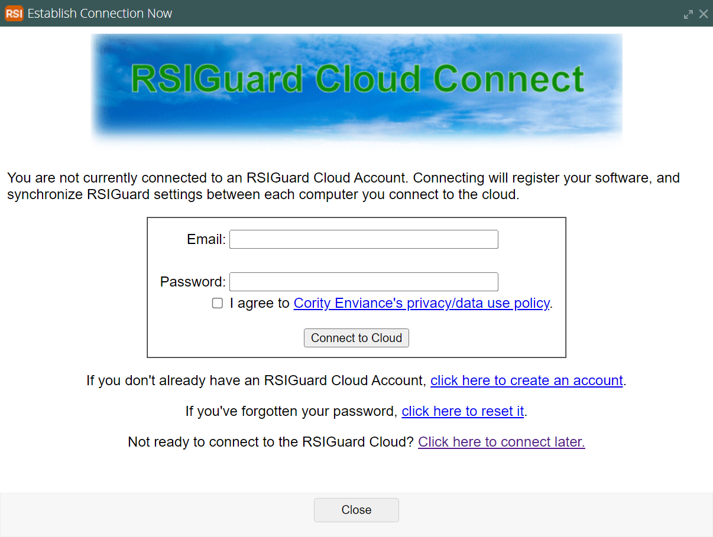

The RSIGuard Cloud feature lets you store your RSIGuard configuration on an RSIGuard Cloud server. The benefit to you is that your settings are automatically synchronized between any computers you use RSIGuard on, and if you change computers, your settings will persist on your new computer.
Additionally, if you connect to the cloud, your registration status is automatically applied to RSIGuard on your new computer.
This feature is meant to be a convenience, and there is currently no additional charge for it. We don't store any personal information, nor do we share any of the information on our server. Still, the service is entirely optional. If you prefer, you can use the Roaming Profile feature to store your settings (and also DataLogger data) on a network drive, or a cloud drive like OneDrive or Google Drive.
When RSIGuard first runs on a new computer, you are given the option to connect to RSIGuard Cloud. If you choose to do so, you'll see this screen:

If you don't have an account, follow the steps to create an account. If you do, you can simply enter your email and password to synchronize this copy of RSIGuard with your other computers.